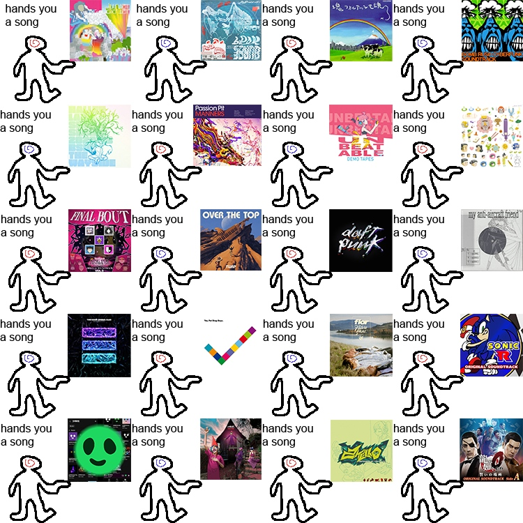
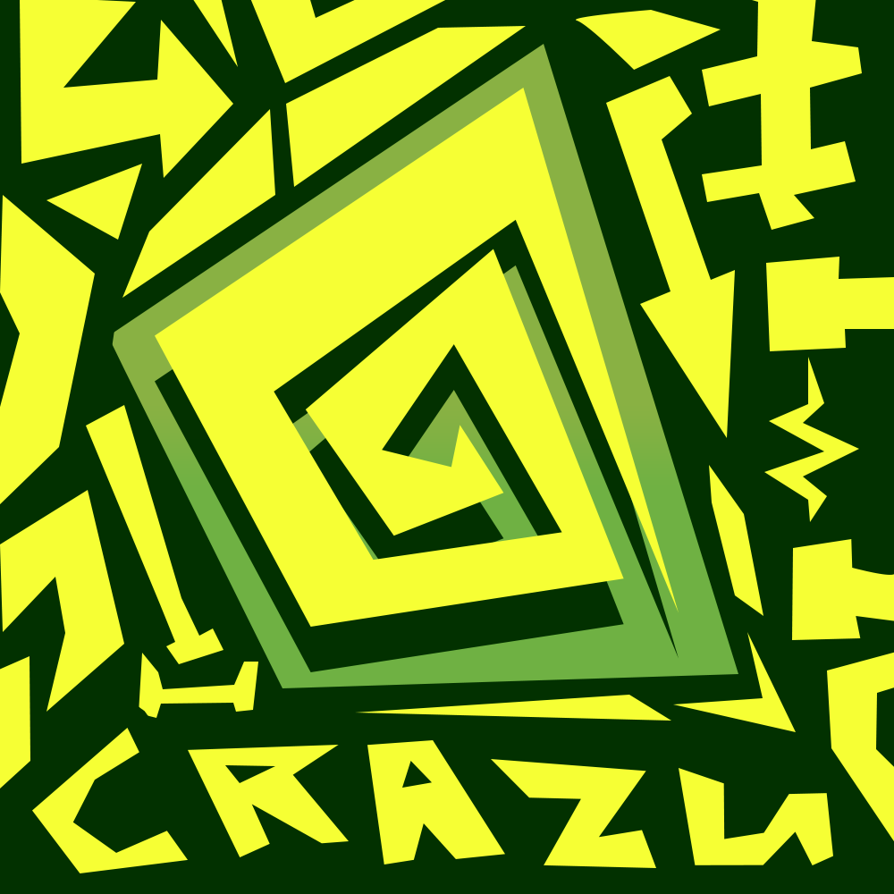
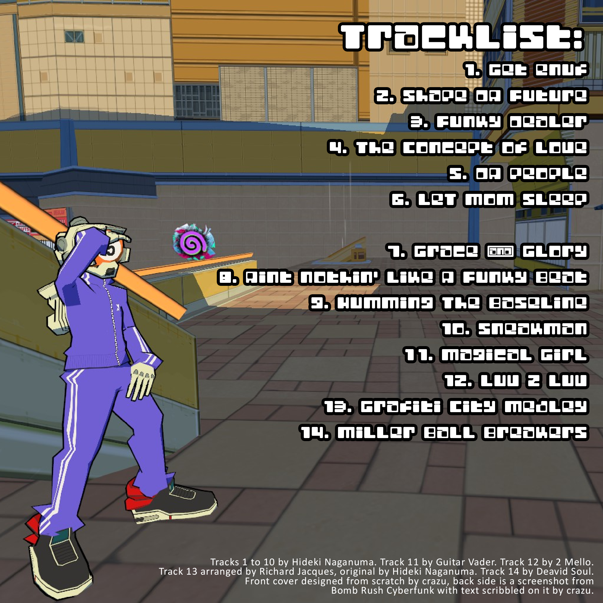
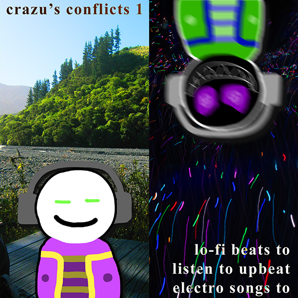
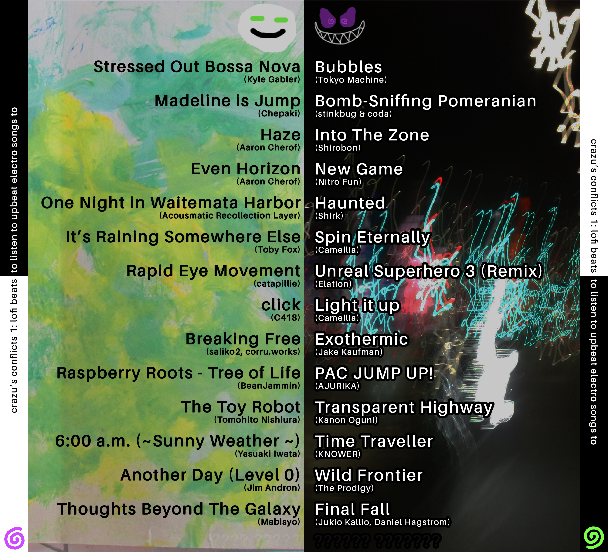
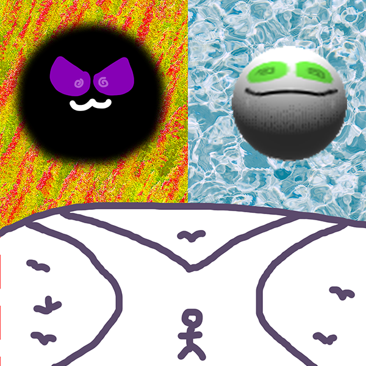
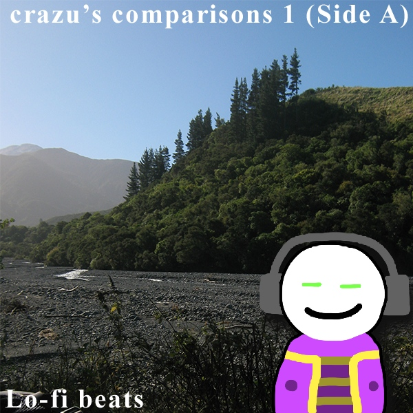
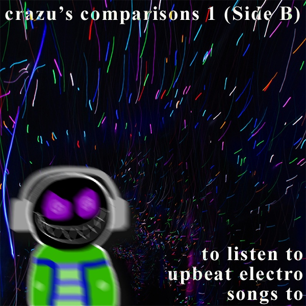
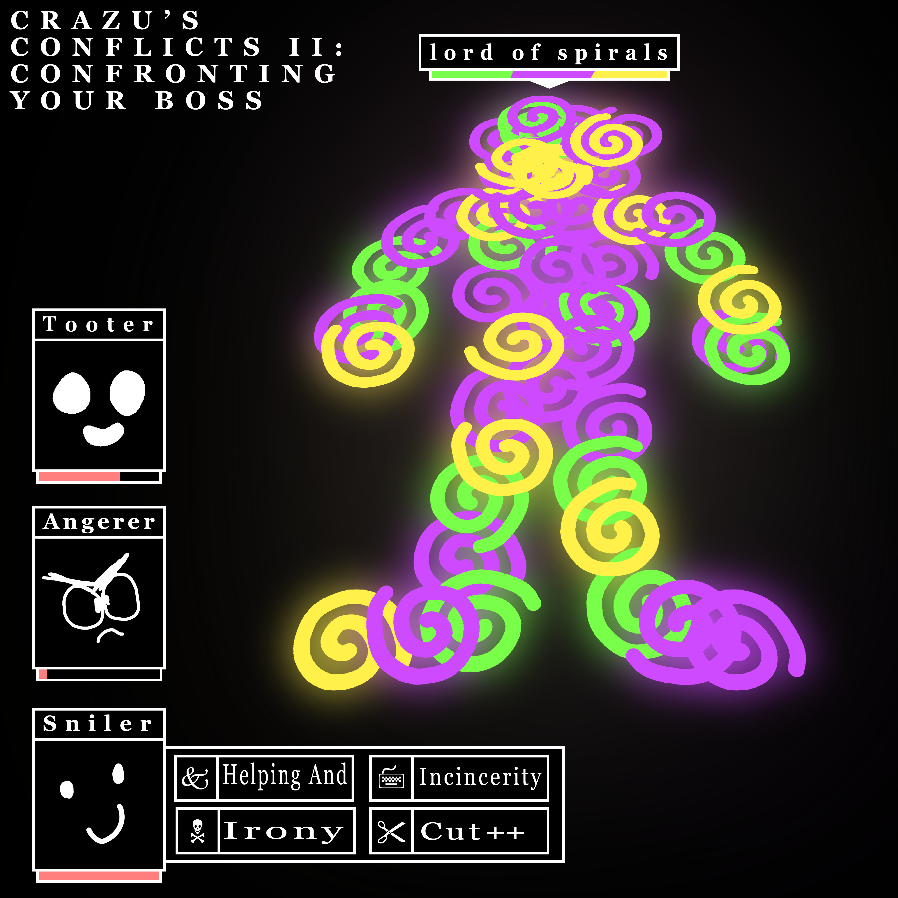
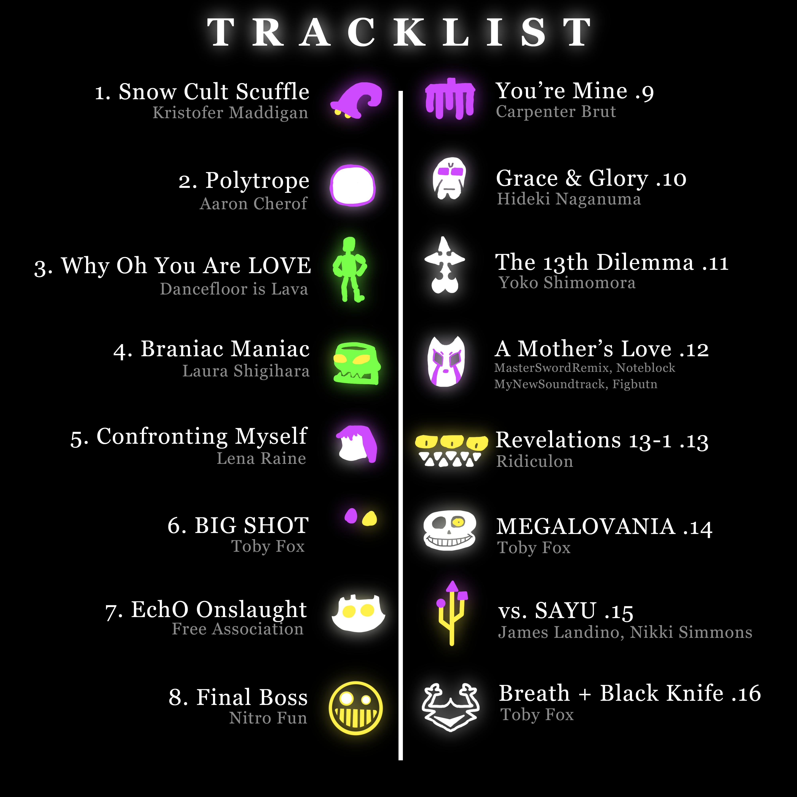

I've been making some mix CDs! Thought it would be fun to showcase their tracklists and (more importantly) the custom covers and inserts I make for them! It's honestly a really enjoyable little design process, from selecting the tracks to printing it all and doodling on the disc itself.
crazu's conglomeration Zero: Songs With Words (and Three Without)

"Disc 1"
- Move Your Feet - Junior Senior
- Biollante - 2 Mello & Million Sunday
- Katamarino - Yui Asaka
- I Wanna Kno - 2 Mello
- Not So Fast!! (Emoticon RMX) - Rotteen vs JQ
- The Reeling - Passion Pit
- WORN OUT TAPES - peak divdie, Rachel Lake
- Houston - Katamari Robo
- Plastic Love (DJ DVD RIP Edit) - DJ DVD RIP
- Top Secret (feat. Andrew Huang) - TWRP
"Disc 2"
- Short Circuit - Daft Punk
- catalogue - julie
- Srugery - Two Door Cinema Club
- Did You See Me Coming - Pet Shop Boys
- Conditional - flor
- Radical City:Living In The City - Richard Jacques, TJ Davis
- Kangaroo Court - Capital Cities
- New Gold - Gorillaz
- Say Somethin - 2 Mello
- Friday Night - inage kensuke
While technically the first mix I made, I don't really consider it to be part of the club, since it wasn't made with any kind of theme or cohesion in mind, nor was it made to be burned to a CD. It's just kind of a collection of songs that I made a cover for. It represents my taste from the time quite well, and that's most of what there is to say. It's also a (subtle) early use of my spiral motif, so that's cool.
CRAZU'S CYBERFUNKS THREE

"Disc 1"
- GET ENUF - Hideki Naganuma
- Shape Da Future - Hideki Naganuma
- Funky Dealer - Hideki Naganuma
- The Conecept of Love - Hideki Naganuma
- DA PEOPLE - Hideki Naganuma
- Let Mom Sleep - Hideki Naganuma
- Grace & Glory - Hideki Naganuma
- Aint Nothin' like A Funky Beat - Hideki Naganuma
- Humming the Baseline - Hideki Naganuma
- Sneakman - Hideki Naganuma
- Magical Girl (1998 Original Version) - Guitar Vader
- LUV 2 LUV - 2 Mello
- Course: Graffiti City - Hideki Naganuma, Richard Jacques
- Miller Ball Breakers - Deavid Soul
My first proper mix! As is evident from the cover style and tracklist, this was made to squish a concentrated blast of Jet Set Radio vibes onto a disc. So naturally it includes many songs from that duology, as well as it's spiritual successors in both style and gameplay (Lethal Leauge Blaze, the works of 2 Mello, and Bomb Rush Cyberfunk my GOAT).
As to why it's called three and not one, I think I started making some others in between that I then promptly lost and/or forgot about, so I cycled the numbers back into the system for later use.

Inside Cover
crazu's Conflicts 1: lo-fi beats to listen to upbeat electro songs to

"Side A: Lo-fi Beats"
- Stressed Out Bossa Nova - Kyle Gabler
- Madeline Is Jump - Chepakl
- Haze - Aaron Cherof
- Event Horizon - Aaron Cherof
- Grace Medley-One Night in Waitemata Harbor - Acousmatic Recollection Layer
- It's Raining Somewhere Else - Toby Fox
- Rapid Eye Movement - catapillie
- Click - C418
- Breaking Free - saiiko2, corru.works
- Rasperry Roots-Tree of Life - BeanJammin
- The Toy Robot - Tomohito Nishiura
- 6:00 a.m. (~Sunny Weather~) - Yasuaki Iwata
- Another Day (Level 0) - Jim Andron
- Thoughts Beyond The Galaxy - Mabisyo
- Main Theme - Luis Clementine
"Side B: to listen to upbeat electro songs to"
- Bubbles - Tokyo Machine
- Bomb-Sniffing Pomeranian - Stinkbug & coda
- Into The Zone - Shirobon
- New Game - Nitro Fun
- Haunted - Shirk
- Spin Eternally - Camellia
- Unreal Superhero 3 (Remix) - Elation
- Light it up - Camellia
- Exothermic - Jake Kaufman
- PAC JUMP UP! - AJURIKA
- Cyber Space 2-6: Transparent Highway - Kanon Oguni
- Time Traveller - KNOWER
- Wild Fronier - The Prodigy
- Final Fall - Jukio Kallo, Daniel Hagstrom
- Feisty Flowers - Cazok
Now this, I'm proud of! Properly chunky amount of songs, a nice slow vs fast theme, and a lot of custom pieces. And all of it (minus the fonts I guess) was made by me! The photos were taken by me, the little drawings were made by me, even the painting on the back cover is an original dating back to when I was One year old!
Also very fond of the colourful light images used for the >:) backgrounds. They were taken using a 'fireworks' setting on my camera at a walk-through light show. Neat stuff.
It was a bit of a struggle to get everything printed out for the final CD case. There were twice as many parts as there were in the last one, an I foolishly didn't check the measurements and assumed they'd be same as the last case I printed for. This was incorrect. Many prints were made.

Back Cover (with tracklist)

Front Insert

Album Cover #1 (Made for the MP3 download copy)

Album Cover #2 (Made for the MP3 download copy)
CRAZU'S CONFLICTS 2: CONFRONTING YOUR BOSS

"Disc 1"
- Snow Cult Scuffle - Kristofer Maddigan
- Polytrope - Aaron Cherof
- Why Oh You Are LOVE - Dancefloor is Lava
- Brainiac Maniac - Laura Shigihara
- Confronting Myself - Lena Raine
- BIG SHOT - Toby Fox
- EchΘ Θnslaught - Free Association (Toshiyuki Sudo)
- Final Boss - Nitro Fun
- You're mine - Carpenter Brut
- Grace & Glory - Hideki Naganuma
- The 13th Dilema - Yoko Shimomura
- A Mother's Love - MasterSwordRemix, NoteBlock, MyNewSoundtrack & Figburn
- Revelations 13-1 - Ridiculon
- MEGALOVANIA - Toby Fox
- vs. SAYU - James Landino; Nikki Simmons
- Breath + Black Knife - Toby Fox
A lot of concepts I really like in this one. The idea to compile a bunch of cool boss fight songs was easy pickings, so the tracklist came together pretty naturally. Very happy with both the front and inside cover, the idea to go sort of OFF inspired to make a sort of non-traditional RPG style let me incorparate my spirals as well as some of my older smiley faces (I say 'my older smiley faces' but to be honest I'm not sure where most of them came from). I was also very exited to do all of the little doodles for each boss, an idea I knew I had to enact as soon as I thought of it. And they ended up mostly ok (The Burst could use a little work, and Sans looks quite baked).
I also experimented with some track editing to make some fancy transitions this time. Didn't do it on all of them, just a touch here and there. Most noticably, the final notes of Snow Cult Scuffle transition perfectly into Polytrope, and I added a static noise and a hard cut between BIG SHOT and EchΘ Θnslaught. I also made a sort of alternate mix of Black Knife, adding Breath to the front of it, looping it twice, and adding a fade out to the end. I really like the ambiance at the start of that fight, so I wanted to keep that intact.

Inside Cover